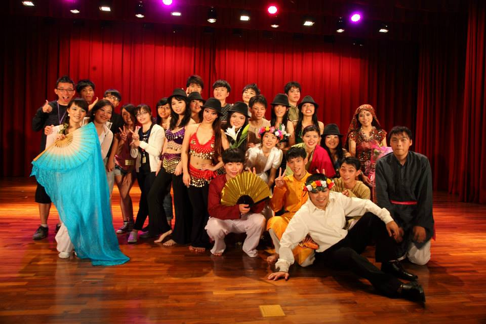

89th Anniversary Of National Ilan University
活動名稱 第十四屆五月風情舞樂天
活動地點 國立宜蘭大學 行政大樓 萬斌廳
報名日期時間 2015/05/01 13:00~ 2015/05/18 19:00
活動日期時間 2015/05/18 19:00~ 2015/05/18 22:00(18:30入場)
活動說明 五月風情舞樂天至今已經第十四屆了，為海韻國際民俗舞蹈社每年在五月校慶進行一年一度的成果發表會，每年都會表演各式各樣的組曲，今年包含印度、墨西哥、中國、華爾滋、原住民、西班牙、蘇格蘭、夏威夷、匈牙利等等，此外也邀請了許多校外的舞團來參與我們的舞蹈盛宴，帶來世界各國與台灣本土的舞蹈，保證讓你遨遊在民俗舞蹈的世界中，不要猶豫，趕快一同和你的親朋好友來參與海韻社的年度盛會吧!
報名人數 正取:250人
候補人數 候補:30人
主辦單位 國立宜蘭大學海韻國際民俗舞蹈社
活動聯絡人 王玟
聯絡人電話 0923-272-225
聯絡人E-Mail winnie3432@yahoo.com.tw

© 國立宜蘭大學課外活動組版權所有 參考設計 TEMPLATED